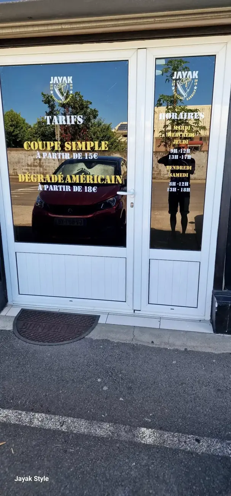
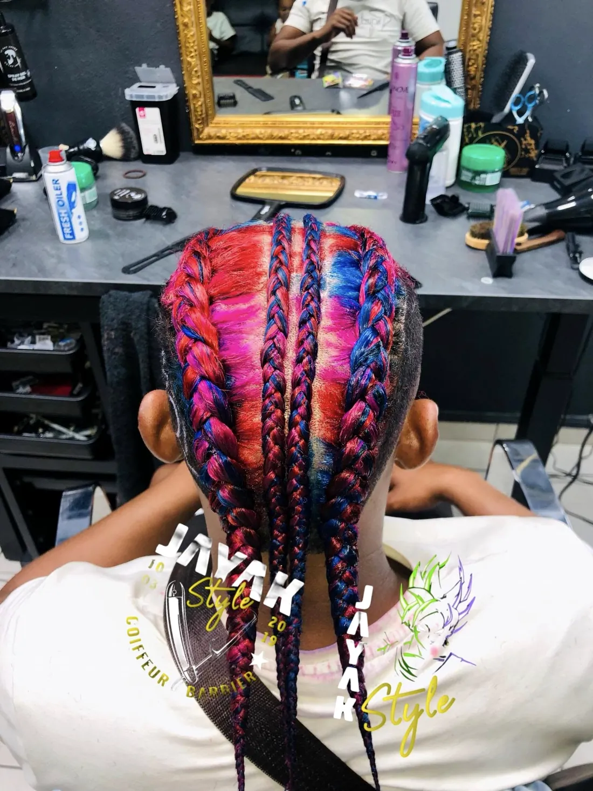
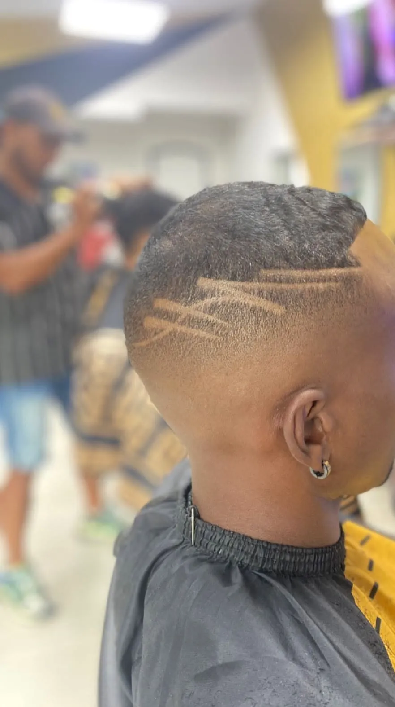
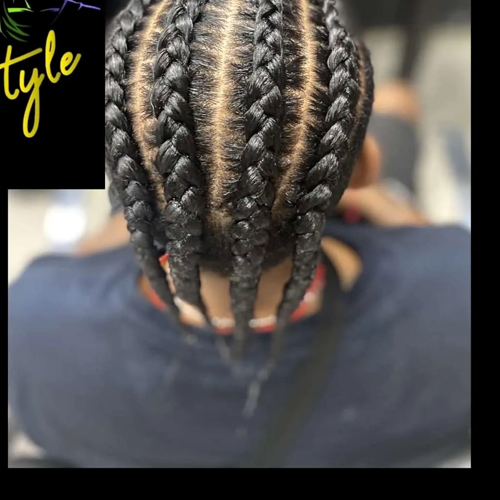
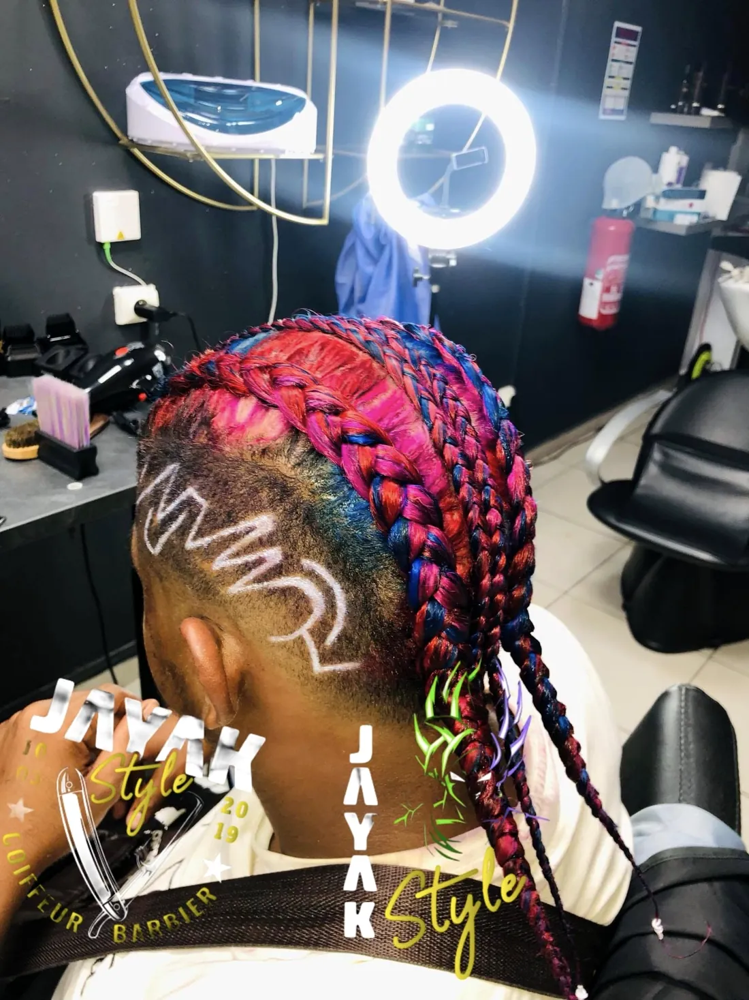
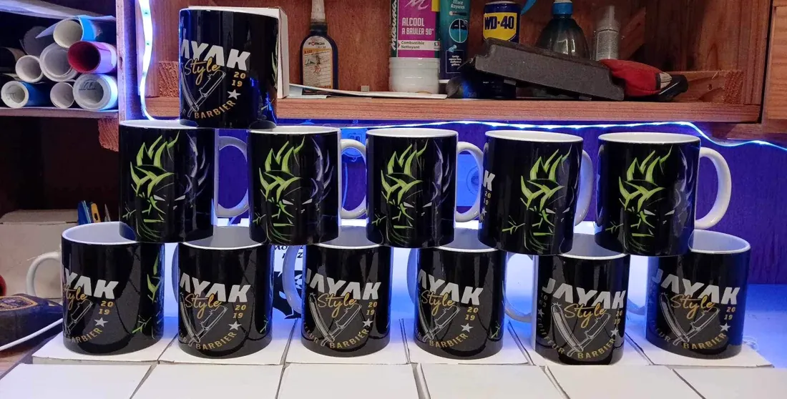

Un coiffeur simple et efficace, pour vous servir !
Jayak Style (By La Comète) vous accueille au 1 rue des Eucalyptus, à Bras-Panon, entre l'ancien Vival et Samoussa Carlos. Coiffeur mixte et barbier : chacun repart avec la coupe qui lui ressemble.
Les tarifs et les horaires sont affichés sur la vitrine, et mis à jour régulièrement sur la page Facebook du salon.

La devantureCoupe simple, dégradé américain, finitions nettes.
Une barbe dessinée avec soin, des lignes nettes.
Balayage, mèches et coloration pour éclairer la chevelure.
« Un coiffeur simple et efficace. »Présentation de Jayak Style sur sa page Facebook




Faites glisser pour voir les réalisations →
Jayak Style présente sur sa page des produits capillaires et de coiffage… et des objets aux couleurs de la maison, noir et or.

Une coupe, une barbe soignée ou un nouveau style : une idée cadeau qui fait plaisir. Écrivez au salon sur WhatsApp pour la préparer ensemble.
Offrir une carte cadeau1 rue des Eucalyptus
97412 Bras-Panon
Rivière du Mât, entre l'ancien Vival et Samoussa Carlos
Mobile / WhatsApp : 0692 34 35 31
jayakstyleby412@gmail.com